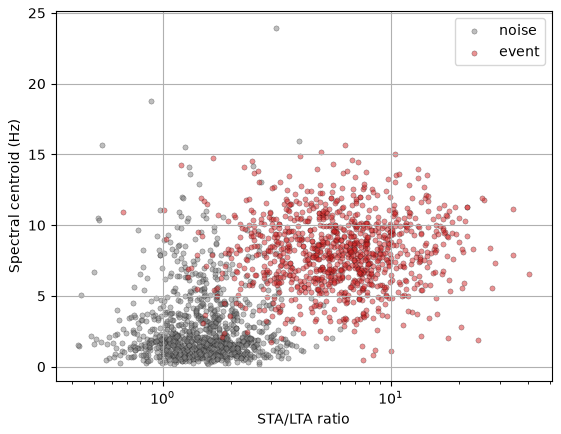
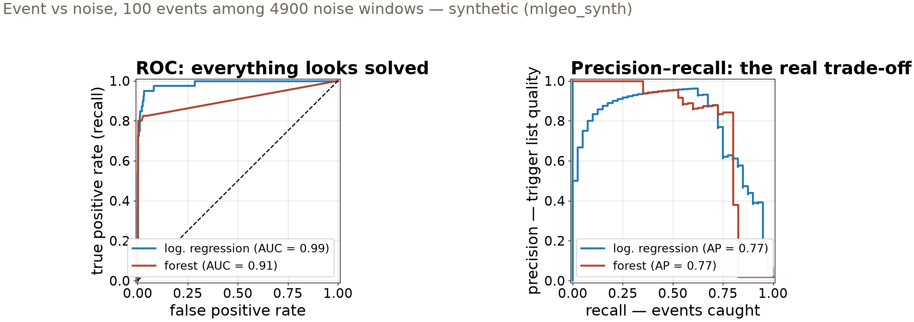

Session 14 · Fri Oct 30 · Book section 3.4
⚖️
A detector that never triggers is 98% accurate.
What should an earthquake detector actually be graded on?
Reading: 3.4 Binary classification
📖 The playbook: why ROC plots flatter classifiers on imbalanced data, and why the precision-recall plot tells the truth.
Saito, T., & Rehmsmeier, M. (2015). The precision-recall plot is more informative than the ROC plot when evaluating binary classifiers on imbalanced datasets. PLOS ONE, 10(3), e0118432.
✓ Rare-event detection done right: an earthquake detector graded — and celebrated — on precision and recall, not accuracy.
Mousavi, S. M., Ellsworth, W. L., Zhu, W., Chuang, L. Y., & Beroza, G. C. (2020). Earthquake transformer — an attentive deep-learning model for simultaneous earthquake detection and phase picking. Nature Communications, 11, 3952.
✗ A celebrated deep aftershock model, matched by a single neuron — headline scores on imbalanced data hid how little was learned.
DeVries, P. M. R., et al. (2018). Deep learning of aftershock patterns following large earthquakes. Nature, 560, 632–634. — Mignan, A. & Broccardo, M. (2019). One neuron versus deep learning in aftershock prediction. Nature, 574, E1–E3.
Metric choice has made and unmade published claims — these three calibrate today’s tools.

Events carry high STA/LTA and high-frequency energy; noise sits low on both. Heavy-tailed ratio → take the log first. Synthetic (mlgeo_synth), 2000 windows.
0.96 k-NN accuracy — both features standardized
0.87 same classifier — centroid in millihertz, no scaling
The scaler is fit on the training split only, then applied to both splits — fitting it on everything leaks test statistics into training.
Distance sees numbers, not units. A colleague’s unit change silently deleted one feature.
The harmonic mean weights the lower number: precision 1.0 with recall 0.1 gives F1 0.18, not 0.55.
Report both. A detector can be excellent on one and useless on the other.
0.980 accuracy of a detector that never triggers — 2% events
0.650 recall of a trained model with 0.992 accuracy
Same features, same models — only the class balance changed. The 99%-accurate detector misses a third of the earthquakes.

ROC divides false alarms by ~1,960 test-split noise windows — flattering. Precision divides by your trigger list — the analyst’s workload. Rare positives: read the PR curve.
| Same logistic regression | Precision | Recall | The trigger list |
|---|---|---|---|
| threshold 0.5 (default) | 0.93 | 0.65 | short — misses ⅓ of events |
| class weights ≈ 1:49 | 0.44 | 0.93 | long — catches nearly all |
| threshold lowered to 0.25 | 0.78 | 0.73 | in between |
Class weights make one event error cost ~49 noise errors during training; threshold moving re-cuts the same fitted probabilities.
Neither knob is “better” — they slide along one curve. The operating point is a scientific decision about analyst time vs missed events.
| Metric | The question it answers | When it misleads | Today’s detector |
|---|---|---|---|
| Accuracy | fraction correct, all classes | any class imbalance | never-trigger scores 0.980 |
| Precision | how clean is the trigger list | alone — one sure trigger wins | 0.93 while missing ⅓ |
| Recall | how many events caught | alone — trigger on everything | 0.93 at precision 0.44 |
| F1 | both at once, harmonic | when error costs are unequal | 0.77 at the default cut |
| ROC AUC | ranking, all thresholds | rare positives | 0.99 while recall is 0.65 |
Price your errors first — a missed event costs science, a false trigger costs analyst time — then pick the metric that charges those prices.
pixi run jupyter lab → 3.4_binary_classification.ipynbProject proposals due today on Canvas. · Mon: multiclass classification (3.5) — the leaderboard opens
ESS 469/569 · Machine Learning in the Geosciences · Autumn 2026